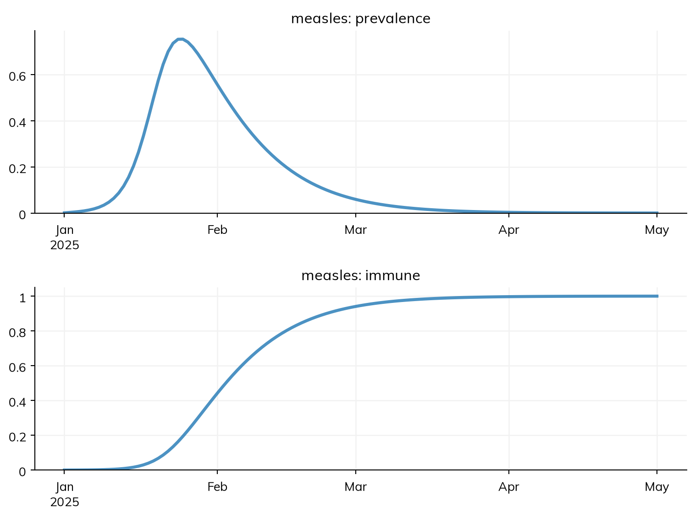
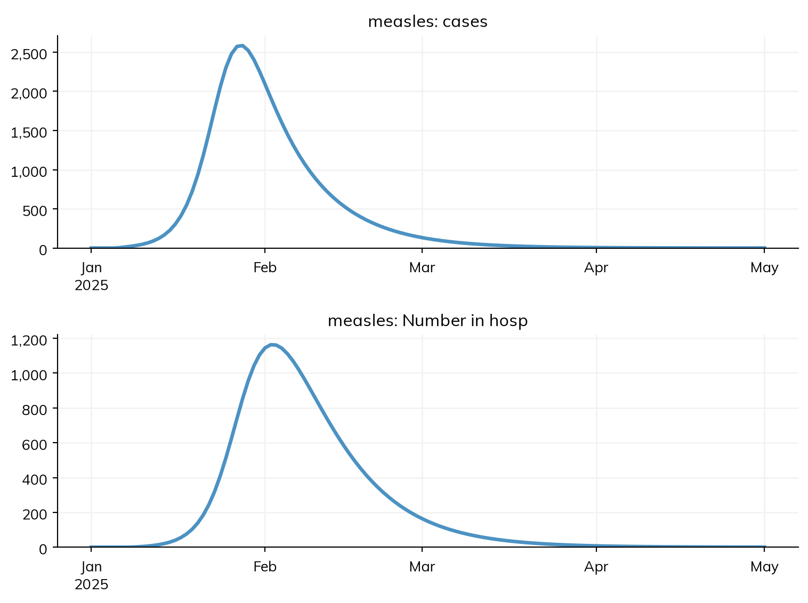

What a model tracks is not what is observed. A model of measles tracks who is susceptible, latent, infectious, and immune; a surveillance system sees reported cases, some days after infection, and only some of them. This page covers the results a model has, how to declare more (such as prevalence or the share immune), how to declare outcomes, the reported quantities worked out from the model’s flows (cases, hospital admissions, deaths), and how data is attached to the results by name, so that it can be plotted and fitted.
Every declared disease has a result for each state and each transition, named after it, with no need to declare them:
a state (S, E, I, R) is a stock: the number of people in it at each time point;
a transition (infection, onset, recovery) is a flow: the number of people who made it during each step. A flow’s running total is .cum.
import starsim as ssS, E, I, R = ss.states('S E I R')infection = S >> E @1.9*Ionset = E >> I @ ss.days(10) # The end of the latent periodrecovery = I >> R @ ss.days(8)measles = ss.Disease(infection, onset, recovery, init=dict(I=0.001))sim = ss.Sim(measles, total_pop=100_000, start='2025-01-01', stop='2025-05-01', verbose=0)sim.run()res = sim.results.measlesprint(res.keys())print('Infections:', round(res.infection.sum()))
A result has one value for each time point of the sim. A stock at time point t is the number at t; a flow at t is the number during the step that ends at t, so a flow’s first value is 0. See Results for working with results: selecting, resampling, plotting, and exporting them.
Declaring more results
A sum or ratio of states, given to the disease as a result, is a result like any other. Nobody is “in” a sum of states, so it makes no new state; as a result, it is the combined count, and a ratio of two is a proportion:
S, E, I, R = ss.states('S E I R')N = S + E + I + Rinfection = S >> E @1.9*Ionset = E >> I @ ss.days(10)recovery = I >> R @ ss.days(8)prevalence = (E + I)/N # The share of people infected, latent or infectiousimmune = R/N # The share immune, as a serosurvey would measure itmeasles = ss.Disease( transitions = [infection, onset, recovery], results = [prevalence, immune], init =dict(I=0.001),)sim = ss.Sim(measles, total_pop=100_000, start='2025-01-01', stop='2025-05-01', verbose=0)sim.run()sim.diseases.measles.plot('prevalence', 'immune')

Flows can be used the same way: infection/S is the incidence per susceptible person. A ratio is a ratio of sums: by group or over a longer period, its numerator and denominator are each summed, and then divided, never averaged.
A result needs a name of its own. A parameter over time is a result of an expression of it under another name, eir_now = 1*eir; giving the parameter itself (eir=eir) raises an error. In a class, an expression with a value for each person, such as age = ss.ppl.age or duration = affected.time, is a helper for the rates, not a result.
Outcomes
An outcome is a reported quantity: a flow worked out from the model’s other flows, which moves nobody. It is how a model says what a surveillance system would see. For measles, the rash appears about 4 days after people become infectious, and suppose half of cases are reported, a tenth of reported cases are admitted to hospital (for 5 days on average), and 2% of those admitted die:
S, E, I, R = ss.states('S E I R')infection = S >> E @1.9*Ionset = E >> I @ ss.days(10)recovery = I >> R @ ss.days(8)cases = ss.outcome(0.5*onset, delay=ss.days(4)) # Half of cases reported, at the rashhosp = ss.outcome(0.1*cases, delay=ss.days(2), duration=ss.days(5)) # A tenth of those admitted to hospitaldeaths = ss.outcome(0.02*hosp, delay=ss.days(5)) # 2% of those admitted diemeasles = ss.Disease( transitions = [infection, onset, recovery], outcomes = [cases, hosp, deaths], init =dict(I=0.001),)sim = ss.Sim(measles, total_pop=100_000, start='2025-01-01', stop='2025-05-01', verbose=0)sim.run()res = sim.results.measlesprint('Reported cases:', round(res.cases.sum()))print('Hospital admissions:', round(res.hosp.sum()))print('Most in hospital at once:', round(res.n_hosp.max()))print('Deaths:', round(res.deaths.sum()))sim.diseases.measles.plot('cases', 'n_hosp')
Reported cases: 49947
Hospital admissions: 4995
Most in hospital at once: 1163
Deaths: 100

The source is a share of a flow, or a sum of shares of several: 0.5*onset is half of those who become infectious. The share is the probability of being counted. Reporting that depends on severity is a sum: ss.outcome(0.1*mild + 0.6*severe), where mild and severe are transitions.
Outcomes can follow from outcomes: hosp is a share of cases, and deaths a share of hosp, so a chain of events is a line for each.
delay= is the time from the source event to this one: a duration (exponentially distributed, as for any duration), a distribution such as ss.constant(ss.days(4)) or ss.lognorm_ex(...), or a function of the sim.
duration= gives a second result, n_<name>: the number currently in the outcome, here the number in hospital.
A share can be a parameter: ss.par(0.5, bounds=[0.1, 0.9]) makes the reporting rate fittable, and ss.by(age=[...]) gives a share for each age group, as for any value (Parameters).
An outcome is worked out from the counts of its source flows, in each group, so it never records which people were counted. In a deterministic run, the share multiplies the flow and the delay spreads it over the following steps; in a stochastic or agent-based run, those counted are a binomial draw from the step’s events, and their delays are drawn too. So the reported cases of a stochastic run vary by chance, as real reporting does.
Infection, onset of symptoms, hospital admission, and a reported case are different events, even when their curves look alike, so define what the data measures before choosing the source and delay: a series of cases dated by onset is not the same as one dated by when the report was received. Check the start and end of the run, too: a delay can move events past the end of the run without changing the number of infections, so the last weeks of an outcome are lower than they will be.
describe() gives each outcome’s definition, under the disease’s transitions, e.g. cases outcome: 0.5 × onset, after 4 days (exponential).
An outcome, an intervention, or a state
An outcome stands for an observation process that the model doesn’t represent. Which to use depends on what the model contains:
The situation
Use
Testing and reporting aren’t in the model: “about half of cases are reported, four days after onset”
An outcome
Testing is modeled, by interventions
The interventions’ own results: each test reports the diagnoses it made (Products)
Being counted changes what happens to the person (people in hospital are isolated and stop transmitting)
An outcome is a result, so anything can read it: an intervention can be triggered when n_hosp passes a threshold. What it can’t do is single out individuals. An outcome belongs to one disease; a total over several diseases is arithmetic on their results after the run (sim.results.measles.cases + sim.results.rubella.cases), which is a result but not a declared one, so data can’t be attached to it.
Data attached by name
Data is attached to a sim with data=: a table with a time column (date, year, t, or time) and a column for each result there is data for, named like the result. A column called cases is compared with the result cases, and plotted with it. To try this where the answer is known, make data from the model: to_data() draws weekly counts of reported cases from a run, with Poisson noise as in real reporting, from a sim with its own random seed:
The plot shows the model’s cases summed over each week of the data, as they are compared in a fit.
Data need not be on the model’s time step. A flow, such as weekly reported cases, is compared with the model’s total over each week of the data; a stock or a ratio, such as the share immune in a serosurvey, with the model’s value on the date of the data. The result already knows which it is.
With several diseases, a column is matched to the one that has a result of that name, or is named with its disease, measles.cases.
Data by group is given in long form: extra columns named after dimensions (age) say which group each row is for, and each row is compared with cases.select(age=...).
A missing value is not a zero. Leave weeks with no report empty (NaN) rather than 0, so that they are left out of the comparison rather than compared with a count of none.
A column that matches no result gets a note that lists the closest names, so a misspelled header is noticed; in a fit, it is an error.
Data is usually read from a file: data='measles_cases.csv' reads it. A file whose headers are not the names of results is read with ss.simdata(), which renames the columns and can drop those that match nothing:
Data attached this way is what calibration fits to: sim.fit() fits every parameter that has bounds to every result that has data.
Likelihoods
Nothing needs a likelihood to be compared with data or fitted to it: by default, a fit compares each result with its data by their normalized absolute difference. Where a likelihood is wanted, for example for Bayesian methods, it is given with the outcome, as the distribution of the data around the model’s value:
The model’s value is the mean of the distribution, and the rest (here the dispersion of a negative binomial) is given, or fitted as a parameter. See Fitting a model and Gradients.
Pitfalls
A daily result against weekly data. Compare like with like: res.cases.resample('week') is the model’s weekly cases.
An outcome where a state is needed. If being counted changes what happens to a person, it is a state, not an outcome.
A misspelled data column. A column that matches no result is only noted when the sim is made; read the notes, or use ss.simdata(..., aliases=...) to rename it.
Further reading
EpiNow2: estimating epidemic growth from delayed and partly reported cases, with delay distributions, in R